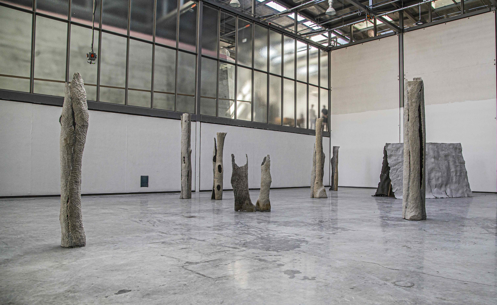
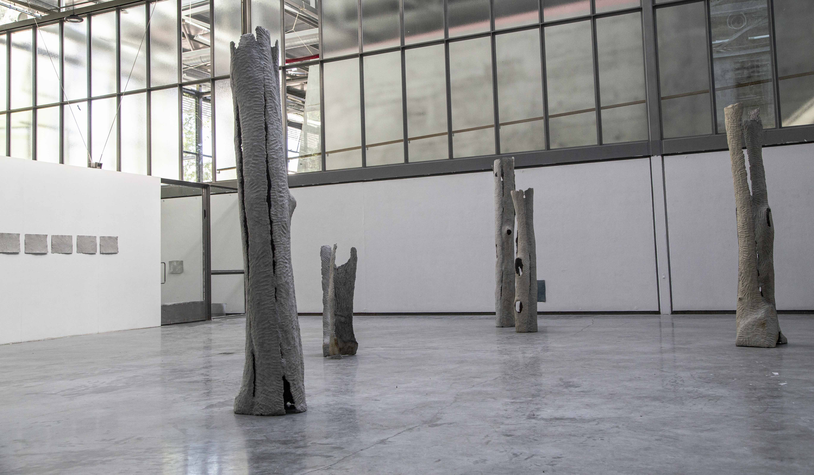
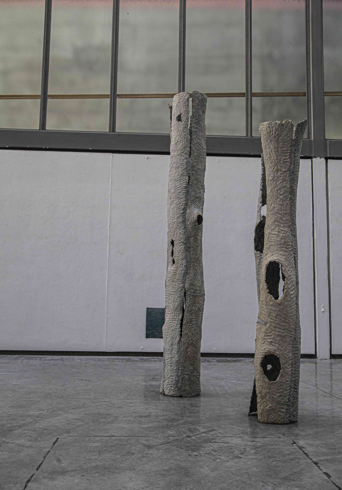
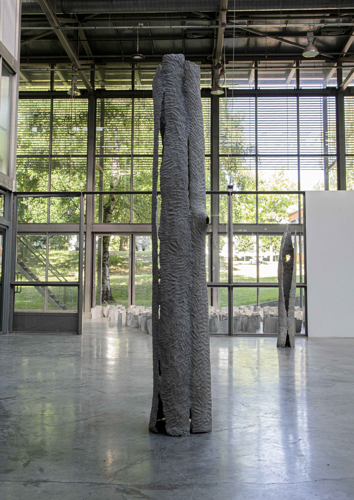
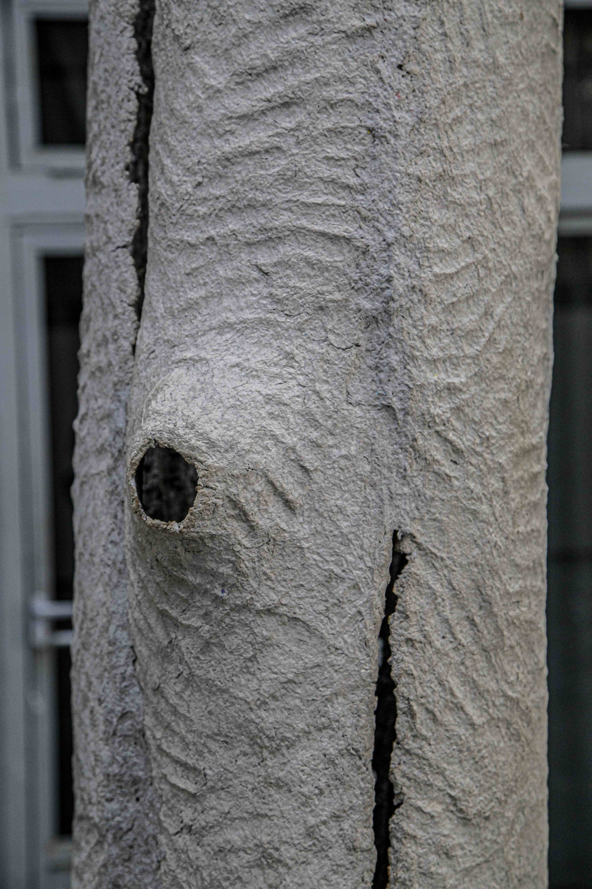
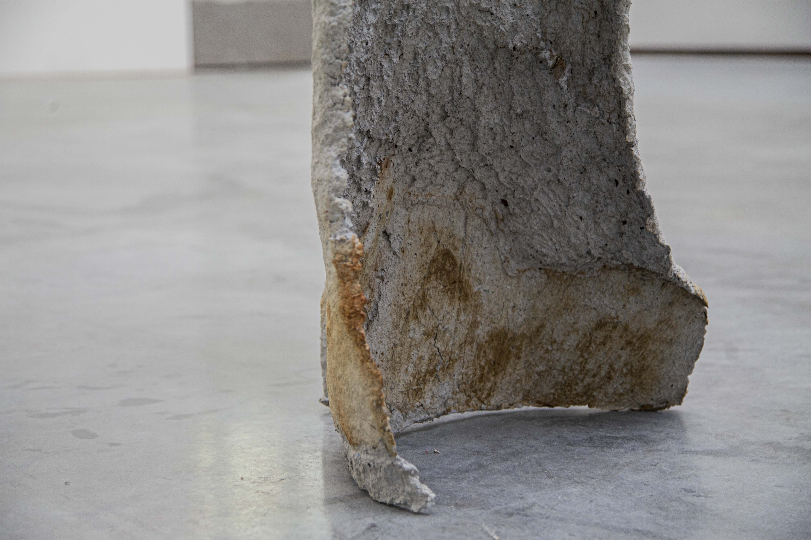
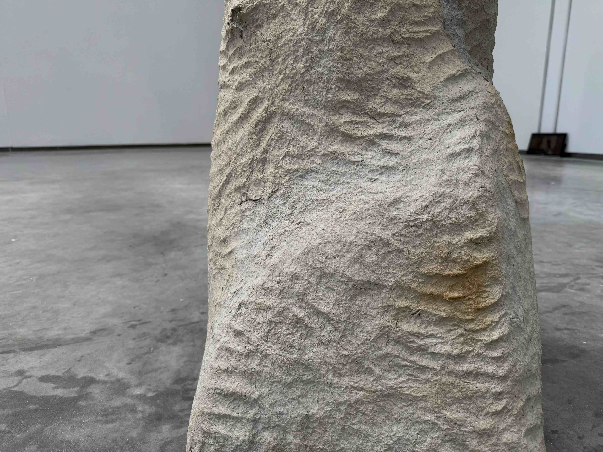
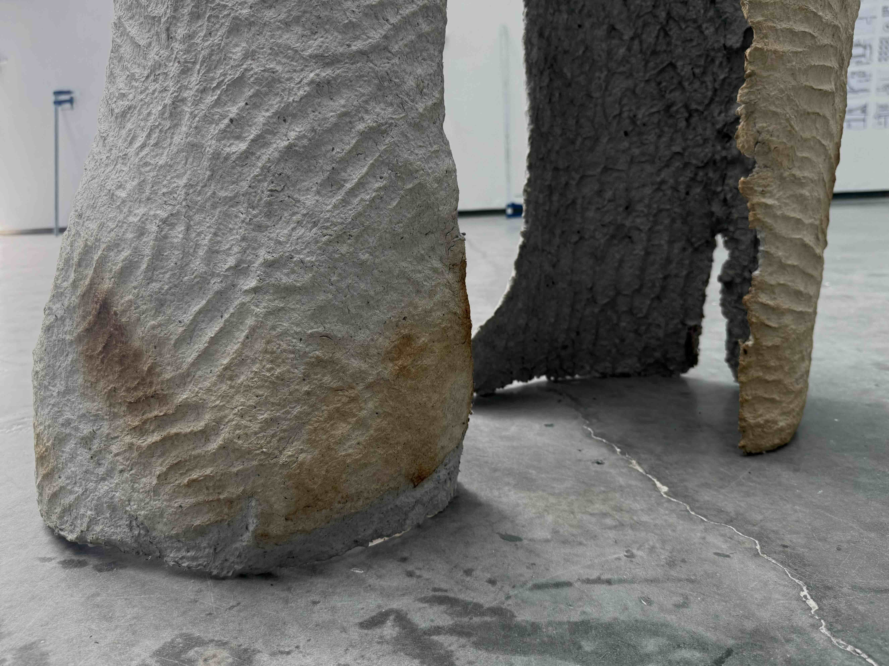
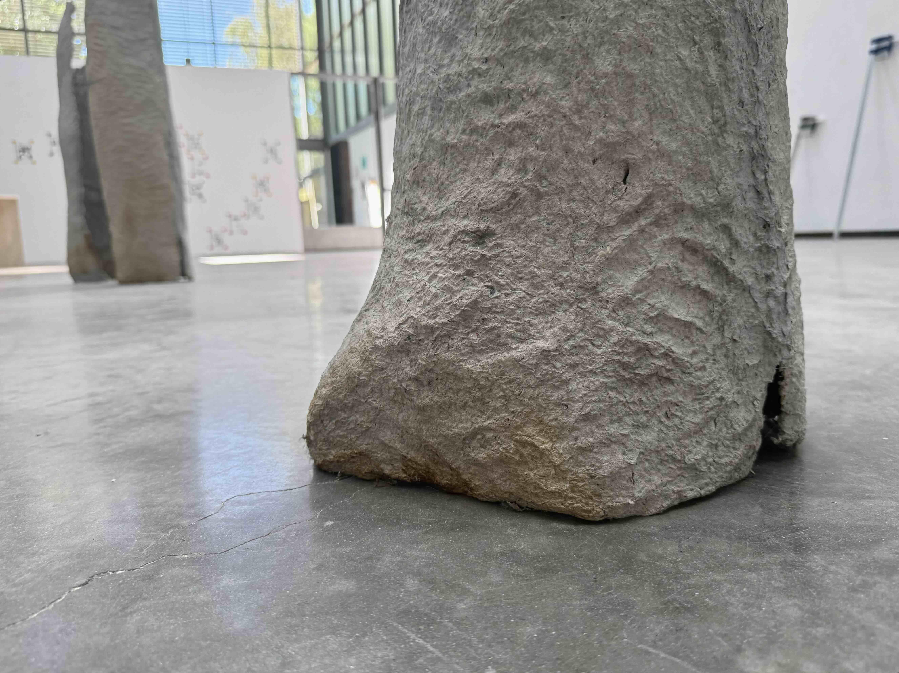
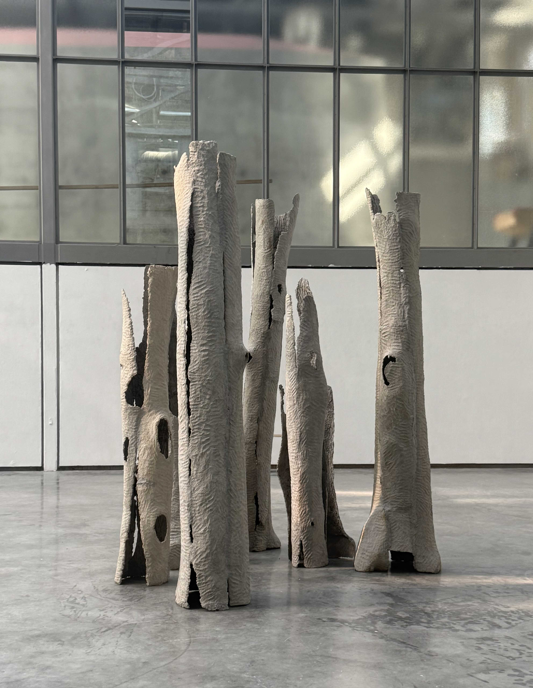
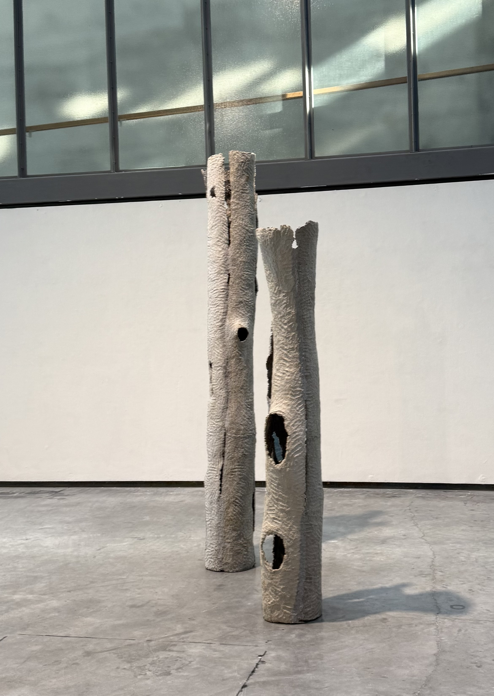
Troncs
Pour réaliser ces troncs, je prélève l’empreinte de l’écorce à l’intérieur, tandis que l’extérieur conserve les traces et les reliefs produits par mes doigts. Les gestes de la main répondent ainsi aux textures de l’arbre. Une fois les fragments assemblés, l’ensemble se recompose sous la forme d’un tronc, dans un geste qui évoque également le recyclage.
La couleur grise et neutre provient directement de la matière. Elle résulte du mélange des différentes encres présentes dans les journaux recyclés. Cette neutralité chromatique peut rappeler les œuvres monochromes de Hans Op de Beeck ou certaines sculptures de Didier Marcel.
Dans le village où je suis né se trouvait également un arbre très ancien. Selon la légende locale, il avait plus de deux mille ans. Il a malheureusement été incendié en 2004 et seul son tronc subsiste aujourd’hui.